Browser captures on this page show the workflow interface and a real saved-result receipt, plus the first appointment-booking milestone. The workflow map covers 116 source criteria; accepted assistant criteria remain 0. See the full criteria-by-criteria coverage map for partial paths and gaps. A screenshot or mapped operation is not acceptance evidence by itself.
1. Open the assistant
Enter the demo and choose a clinic role without creating an account. In a clinic workspace, choose Assistant in the sidebar. Staff use their current clinic session.
The assistant stays available across ordinary workspace routes. Changing patient, encounter, clinic location, or role rebinds the server context and clears protected conversation, form, proposal, and result state.
You can start writing while the clinic connects. Closing the panel keeps your draft and current task for reopening. Choose a patient only when the task needs one.
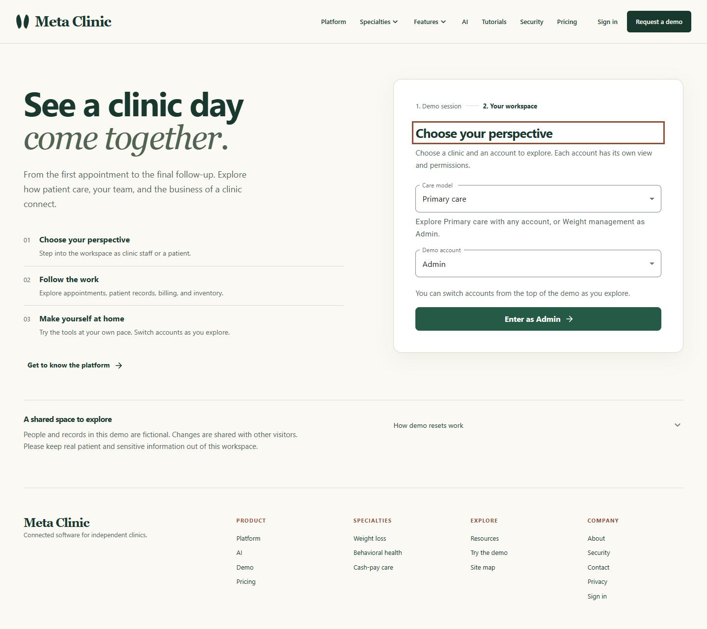
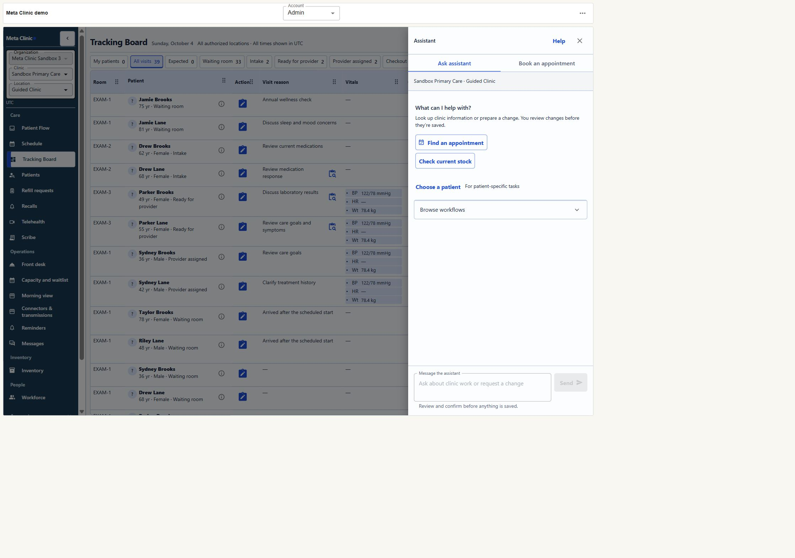
2. Set named context when a task needs it
Workspace questions can run with no patient selected. If a workflow needs a patient or encounter, use the named picker in the panel. The assistant shows the selected clinic, location, patient, and safe encounter label; it does not ask you to enter database identifiers.
Use New task to clear the active form and result while keeping the conversation and draft. A patient or encounter change creates a new server context and clears the previous protected conversation and result.
3. Read clinic records
Ask for a supported read or choose it from Browse workflows. The assistant may ask a clarifying question or suggest a task. When required details and context are ready, the clinic returns the actual result directly; reads do not need a save confirmation.
A read may include a clinic receipt. That records the read action; it is different from a saved-change receipt.
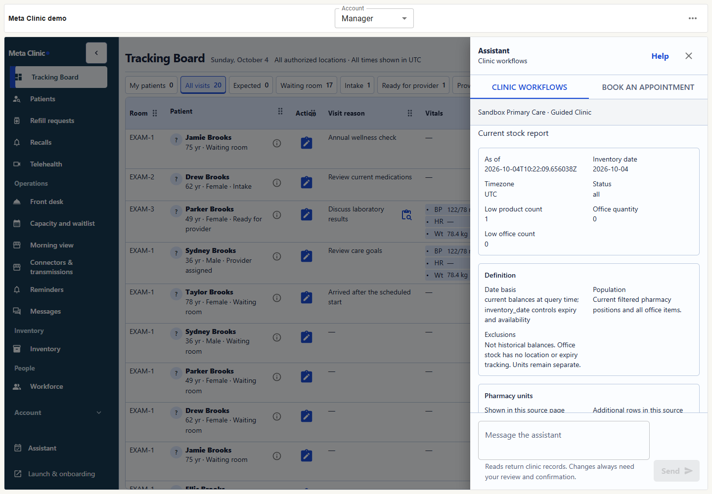
4. Review and confirm supported changes
- Ask for a supported change or choose it from the catalogue.
- Complete the semantic form. Record fields use named choices rather than raw internal identifiers.
- Select Prepare for review and inspect the server-returned proposal.
- Select Confirm and save only when the displayed values are correct. The assistant then shows the clinic's saved-result snapshot and receipt.
A chat message, model suggestion, or proposal is not itself a save. The model cannot confirm changes. Some workflows require a human step in their normal clinic workspace; the assistant links there instead of bypassing that step.
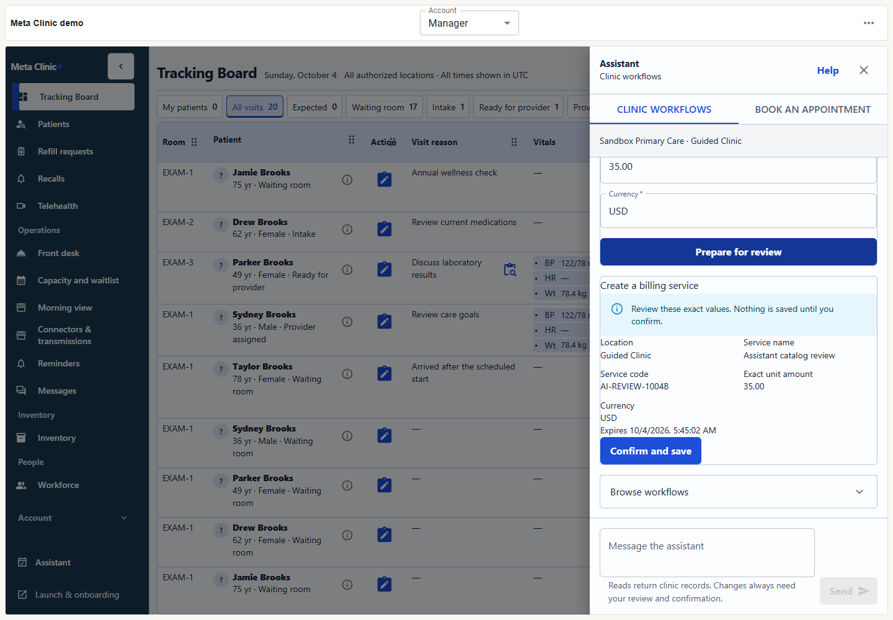
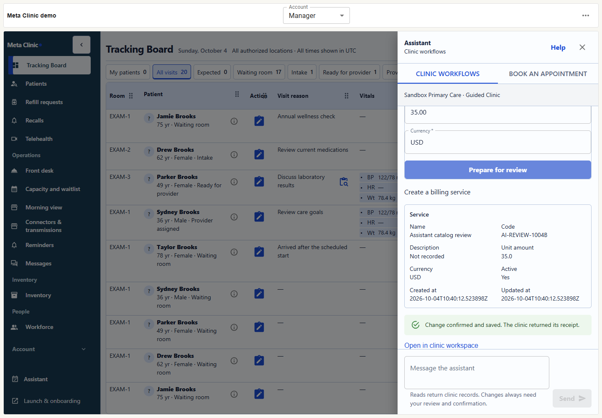
Appointment booking: the first milestone
Use the Book an appointment tab to choose a patient, visit type, and named clinician, ask for a day or time, then select an available opening. Review the exact patient, visit, clinician, location, and time. Only Confirm appointment submits the booking. A successful response is read back from clinic records, with a link to the schedule.
Appointments are not reserved while searching. If an opening changes, a proposal expires, or confirmation is uncertain, refresh or check the saved result before retrying.
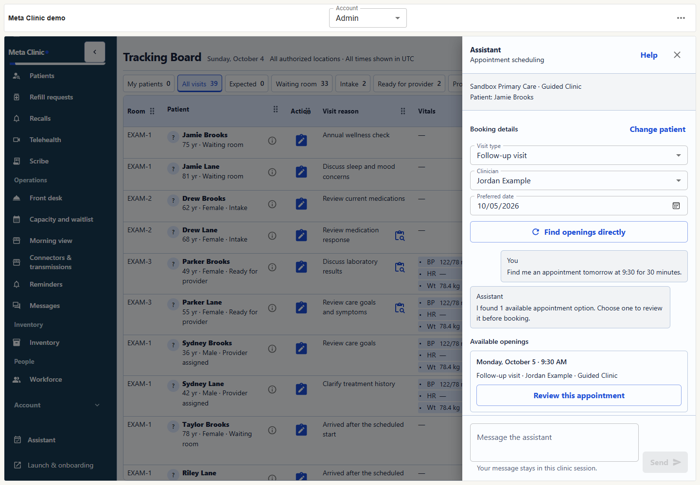
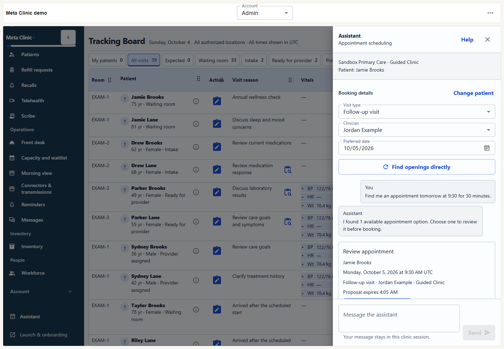
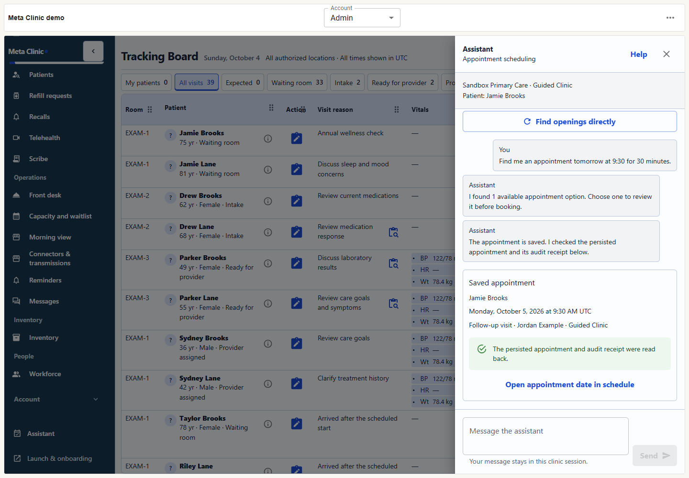
Limits and recovery
- Provider quota or temporary outage: natural-language help may be unavailable. Use the named workflow catalogue and forms, or the direct appointment controls. A form completed after an AI error is not an AI-generated result.
- Permission needed: use a role with the required permission. Human step: follow the linked clinic workflow; assistant confirmation is not offered.
- Stale or expired proposal: prepare a new proposal and review its current values.
- Unknown save outcome: check the clinic readback before trying again.
- Unsupported or unavailable workflow: use the normal clinic workspace. The coverage page distinguishes mapped candidates, partial paths, dependencies, and human gates.
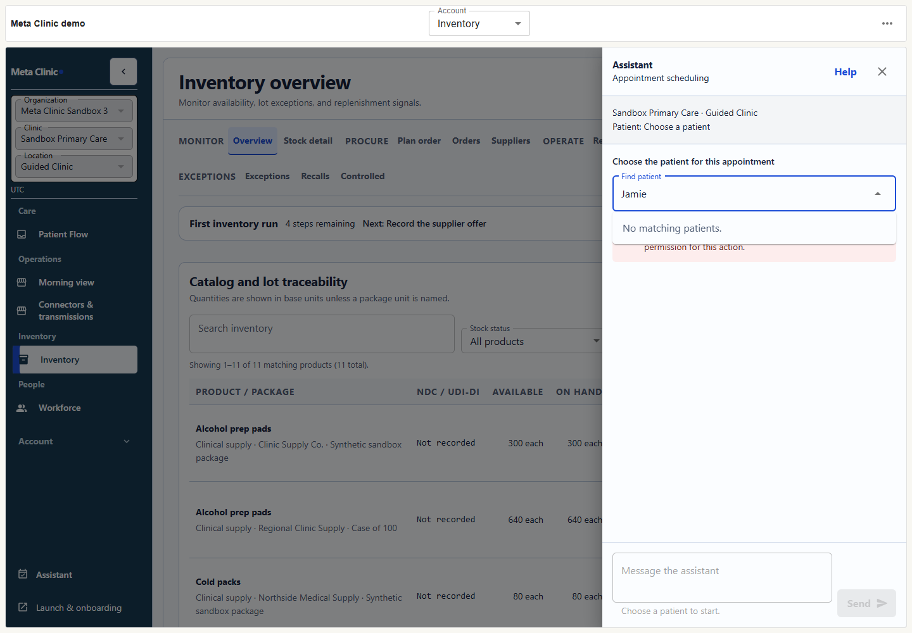
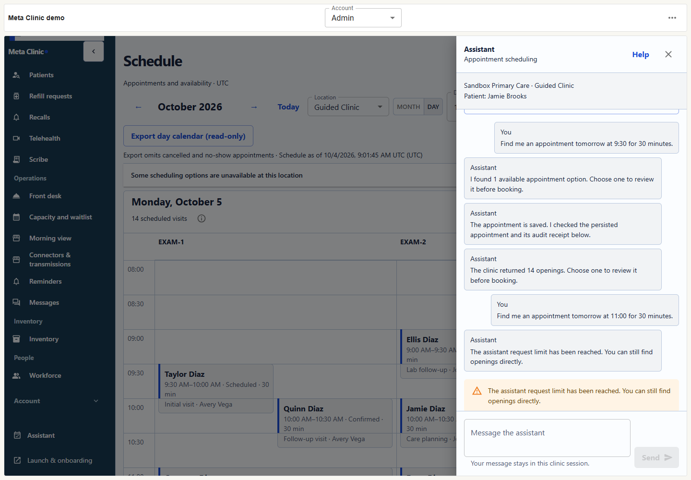
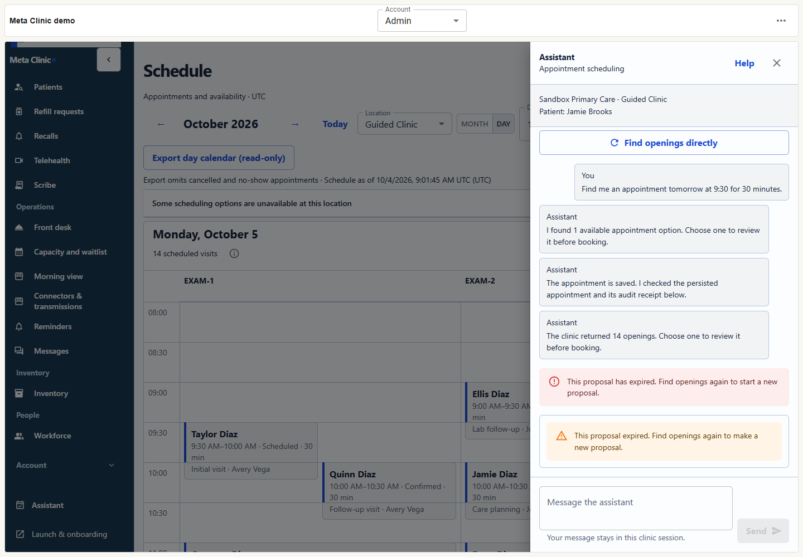
The assistant does not sign clinical notes, grant permissions, or replace final human approvals. Conversation text is session UI state, not a clinical record. Clinic action receipts are stored separately.